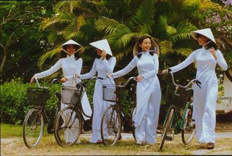

|
ประเทศเวียดนาม

ผู้หญิง นุ่งกางเกงแพรยาว สวมเสื้อ แขนยาว คอตั้ง สูง ตัวเสื้อยาวลงมาจรดข้อเท้า ผ่า 2 ข้าง สูงแค่เอว พวกทำงานหนักจะสวมเสื้อ สั้น มีกระเป๋ า 2 ใบ แขนจีบยาว
ผม ยาวเกล้ามวย สวมงอบสานด้วยใบลานทรงรูปฝาชี หรือใช้ผ้าสามเหลี่ยมคลุมศีรษะดึงชาย 2 ข้างมาผูกใต้คาง ถ้าเป็นทางเหนือแถวฮานอย ใช้ผ้าดำแถบยาวหุ้มผมซึ่งถักเปียไว้ให้มิดแล้วโอบพันศีรษะ ปัจจุบันนิยมตัดผมสั้นและดัดผม สวมรองเท้าส้นสูง หรือส้นรองด้วยพื้นยาง คาดหลังด้วยหนังหรือพลาสติก
ชาย แต่งกายคล้ายหญิง บางครั้ง สวมเสื้อกุยเฮง สวมหมวกสีดำเย็บด้วยผ้า ไม่มีปีกปัจจุบันแต่งสากลกันมากแล้วในเวียดนามใต้มีชาวเขาเหนึ่งเรียกว่า พวกม้อย จะนุ่งผ้าสั้นๆ ปกปิดร่างกายแต่เฉพาะท่อนล่างคล้ายนุ่งใบไม้ ปัจจุบันหญิงสวมเสื้อ นิยม เจาะหูสอดไม้ซึ่งเหลาแหลม ๆ สวมกำไลคอจากประวัติความเป็นมาจะเห็นว่า ชาวเวียดนามมีการแต่งกายผสมผสานกันมีทั้ง ไทยมุง หรือ อ้ายลาวระยะแรก ปนของจีนบ้าง เช่น ลักษณะของเสื้อ บริเวณอก คอปิด แขนยาว แต่แตกต่างจากไทยและจีนตรงที่การใช้ผ้า ถึงแม้ว่าจะใส่กางเกงแล้ว ยังนิยมสวมเสื้อ ผ้าบางที่เปิดจนถึงเอวทั้ง 2 ข้าง ให้เห็นรูปทรงและสัดส่วนที่งดงาม ชาวเวียดนาม ได้ชื่อว่า เป็นชาติมีผิวพรรณงามที่สุดในโลกอีกด้วย |